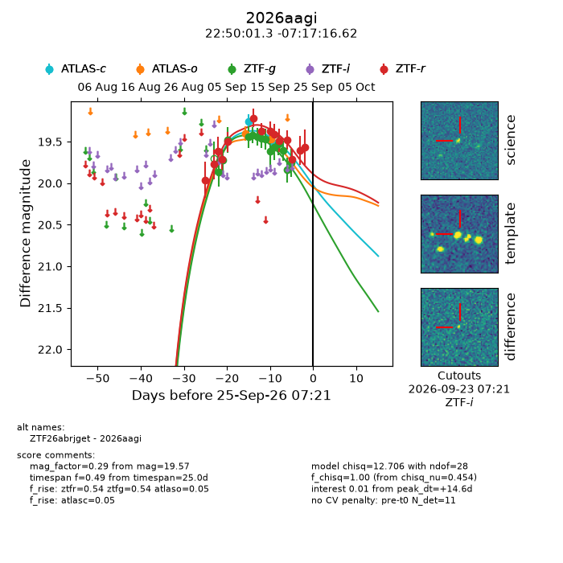
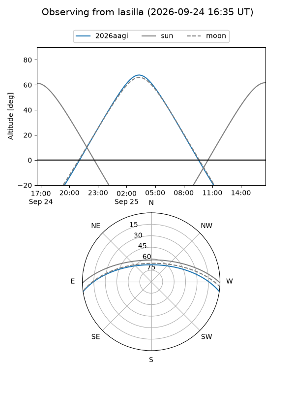
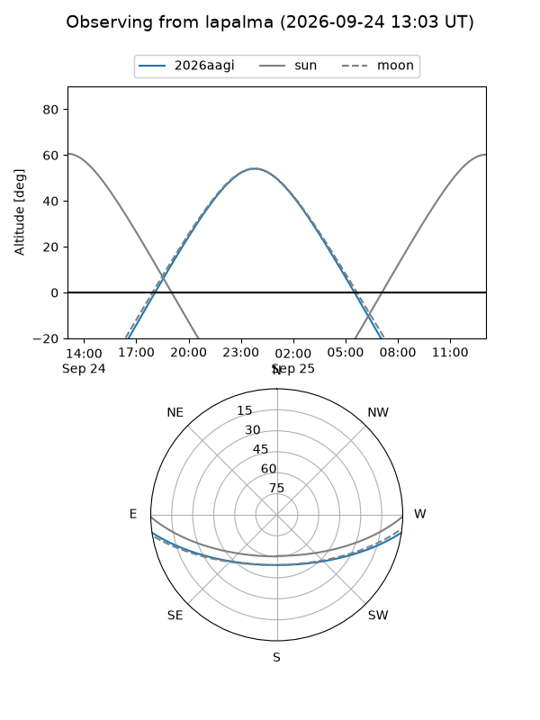
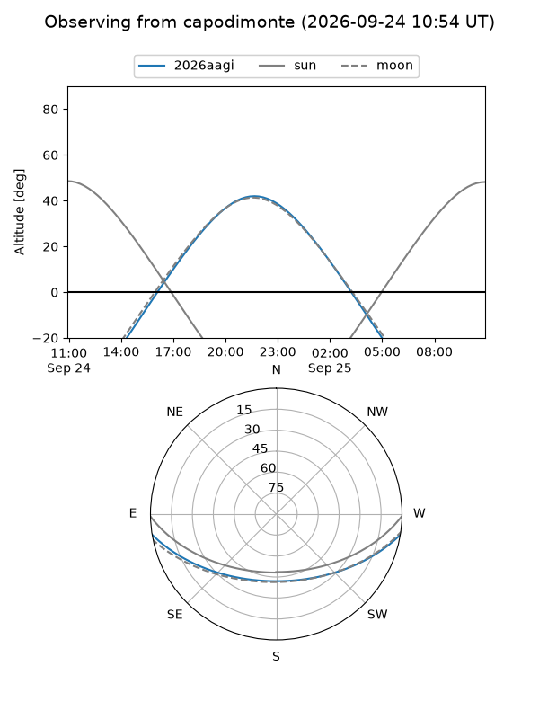
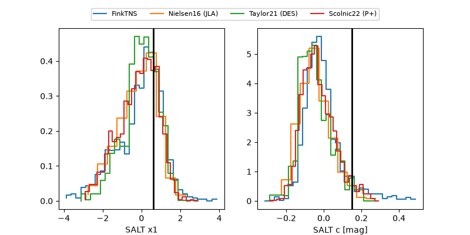

2026aagi
Target 2026aagi at 2026-09-25 07:25
Aliases and brokers:
FINK-ZTF: ztf.fink-portal.org/ZTF26abrjget
Lasair-ZTF: lasair-ztf.lsst.ac.uk/objects/ZTF26abrjget
ALeRCE-ZTF: alerce.online/object/ZTF26abrjget
YSE-PZ: ziggy.ucolick.org/yse/transient_detail/2026aagi
TNS name: wis-tns.org/object/2026aagi
Direct TNS query: direct search
alt names
ZTF26abrjget (ztf,fink_ztf)
2026aagi (tns,yse)
Coordinates:
equatorial (ra, dec) = 342.5054,-7.28795
equatorial (HMS+DMS) = 22:50:01.29,-07:17:16.62
galactic (l, b) = (61.8921,-55.04751)
Flags:
TNS type: nan
peak dt: +14.6
Photometry:
last atlasc=19.53, atlaso=19.47, ztfg=19.75, ztfr=19.57
2 atlasc, 2 atlaso, 14 ztfg, 14 ztfr detections
Lightcurve

Visibility



Additional plots
